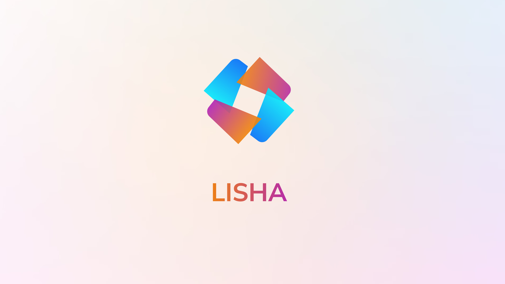
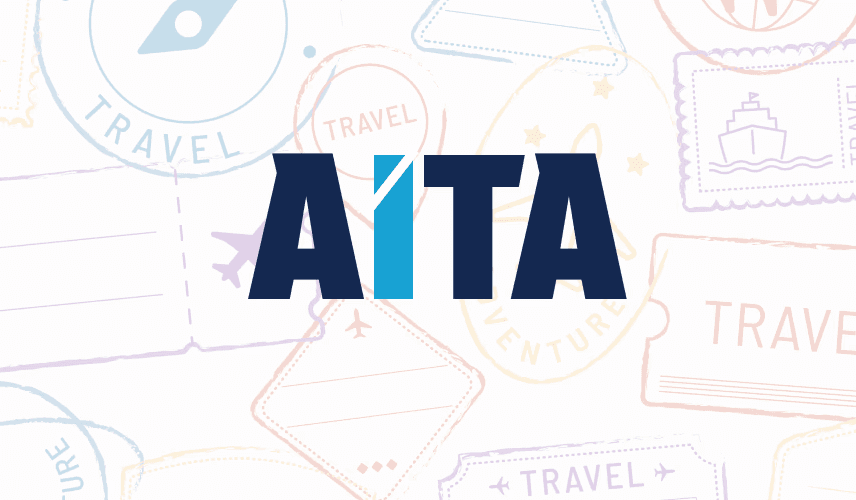
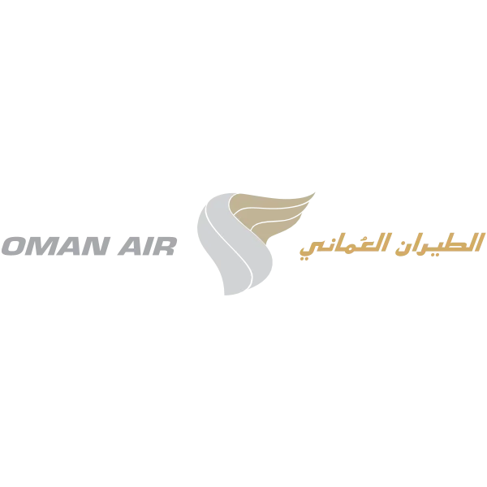
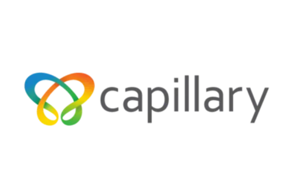
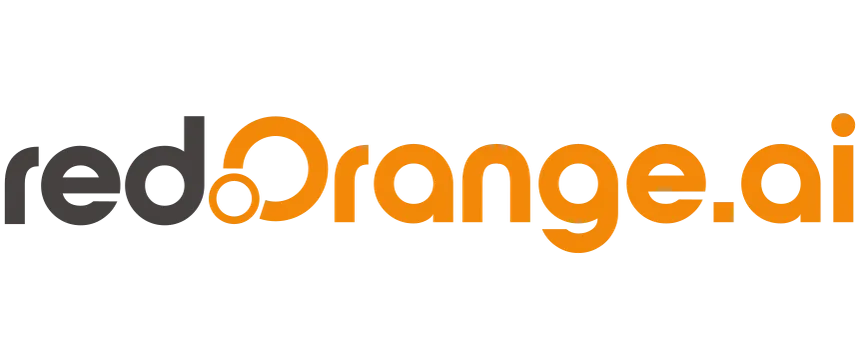
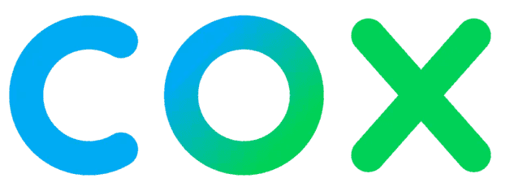

UX Designer
Grasp. Simplify. Humanize.
A product & UX designer since 2016, crafting intuitive digital products for AI, compliance and B2B SaaS teams through the principles of human-centred design. Currently UX Designer at Onengine.ai, Ireland.

Three products where research, structure and craft came together to make hard things feel simple.

An AI platform that turns complex legal and security compliance into simple, automated workflows for DPOs and auditors. Winner of Ireland’s National Startup Award for Fresh Innovation 2025.
Read case study
End-to-end personalised travel itineraries with real-time updates, backup plans and AI-powered recommendations based on each traveller’s preferences.
Read case study
A smart command centre for small and medium businesses to control HVAC, refrigeration and lighting while preventing costly equipment failures.
Read overviewI move between research, storytelling and shipping product, depending on what the problem needs.
Grasp. Simplify. Humanize.
Imagine. Express. Inspire.
Think. Design. Deliver.
Brands I’ve worked with







As founder of RedOrange AI, I worked closely with Vipul, who made a meaningful impact as our UX Designer by turning a complex, compliance-heavy platform into an intuitive experience. His rapid wireframing, user-centric mindset, and ability to simplify complex journeys significantly enhanced our product’s usability.
Vipul is an exceptional UX designer whose creative prowess, meticulous attention to detail, and user-centric approach consistently deliver outstanding results. A truly collaborative and dedicated professional, he elevates any project he works on and is a valuable asset to any team.
In just two months, he quickly mastered our complex product and successfully delivered a massive project under tight remote-working constraints. His exceptional work quality showcased both his high-level technical skill and genuine passion for UX design.
Vipul consistently exceeded expectations with his exceptional UX/UI skills, providing creative design iterations and proactive improvements. Despite remote work challenges, he delivered a massive project within tight deadlines, making his dedication and expertise highly recommended.
Questions hiring managers and founders usually ask me.
While my resume highlights my use of Claude Code and Figma AI-assisted tools for rapid prototyping and handoffs, my practical strategy centres on prompt engineering for UX research synthesis, automated design system documentation, and generating functional React or Tailwind code directly from designs. I use AI to automate repetitive UI tasks, so I can put 80% of my effort into high-level design strategy, user research and product architecture.
I treat design as a strategic business driver rather than just visual execution. When product requirements clash with optimal UX, I use quantitative data (A/B testing, drop-off rates) and business metrics to model the cost of friction. My goal is always win-win: aligning user success with measurable business outcomes, such as the $30M+ ROI and 40% conversion increases delivered across my enterprise projects.
My B.Tech in IT lets me speak fluent developer language, understand technical constraints, and design with system architecture in mind. I take part in sprint planning, keep component tokens aligned between Figma and code, and provide interactive prototypes alongside edge-case documentation. By bridging the gap early, I reduced design-to-development handoff time by 35% and cut UI bugs significantly.
I specialise in taking dense, non-intuitive domain logic, such as field service operations, AI SaaS or healthcare tracking, and turning it into simple, human-centred flows. I start with deep contextual inquiry and ethnographic user studies to learn the domain quickly. That rapid absorption let me deliver an end-to-end AI SaaS MVP within three months at RedOrange.ai.
Scaling a design system needs a balance of governance and flexibility. I set up centralised, accessible (WCAG-compliant) component libraries with clear usage guidelines, plus contribution models so product teams can propose new patterns. At Onengine.ai and Code Craft, my standardised systems removed up to 40% of UI inconsistencies and sped up development across multiple cross-functional teams.